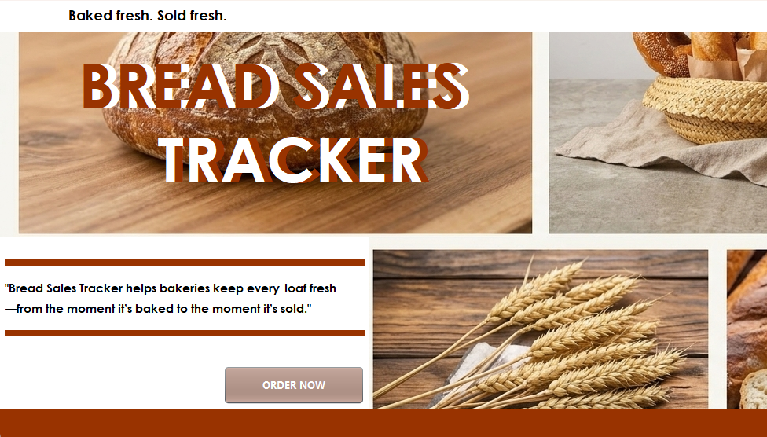
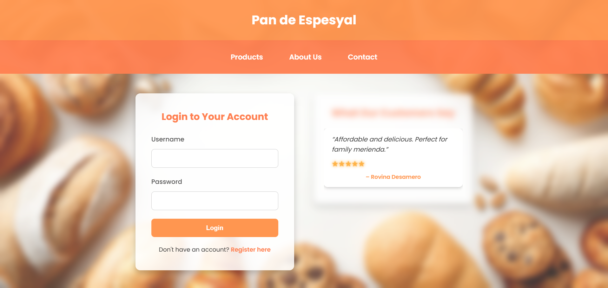
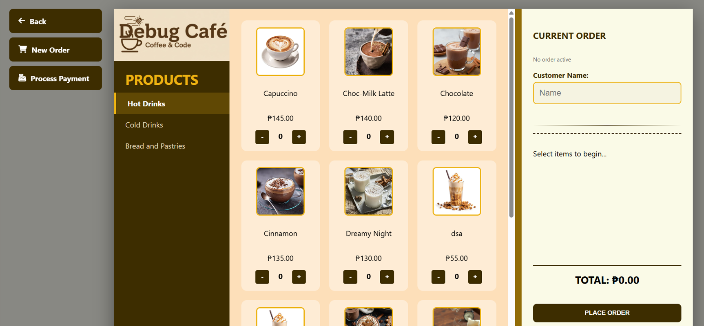
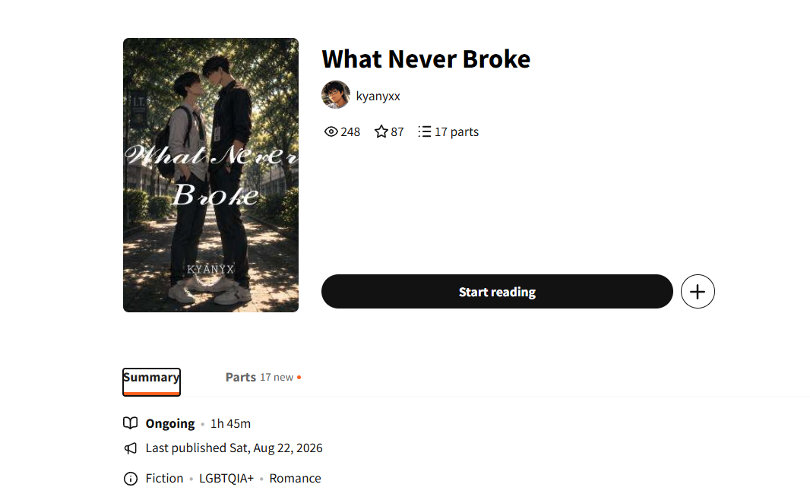

01

DESKTOP APPLICATION
Bread Sales Tracker
A Java Swing application designed to manage bread products, inventory, sales, expiration dates, and users.
A collection of projects I have created while learning Information Technology, programming, web development, and database management.
SELECTED WORK
Click a project to explore more →

DESKTOP APPLICATION
A Java Swing application designed to manage bread products, inventory, sales, expiration dates, and users.

WEB APPLICATION
A bakery website where customers can browse products, add items to their cart, and place orders online.

WEB MANAGEMENT SYSTEM
A café management website created using PHP and MySQL with user authentication and role-based access.
MY TOOLKIT
Creating responsive and user-friendly websites using modern web technologies.
Developing applications and solving problems using different programming languages.
Designing, managing, and connecting applications to SQL-based databases.
BEYOND TECHNOLOGY
The things I enjoy outside of coding.
Singing is one of the things I enjoy the most. I like performing songs, practicing my vocals, and exploring different vocal styles.

I enjoy writing stories, creating characters, and developing ideas. Writing allows me to express my imagination and creativity.

Gaming is one of my favorite ways to relax during my free time. I enjoy competitive games and exploring different game worlds.
CURRENTLY LEARNING
As an IT student, I believe that learning never stops. I am continuously improving my programming, web development, database, and software development skills.